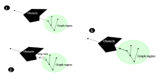
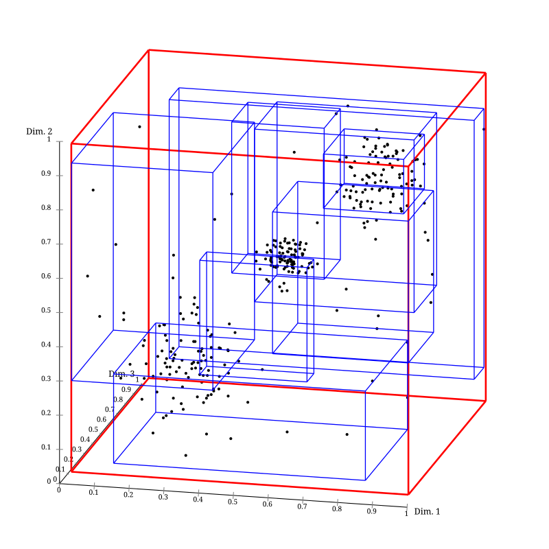
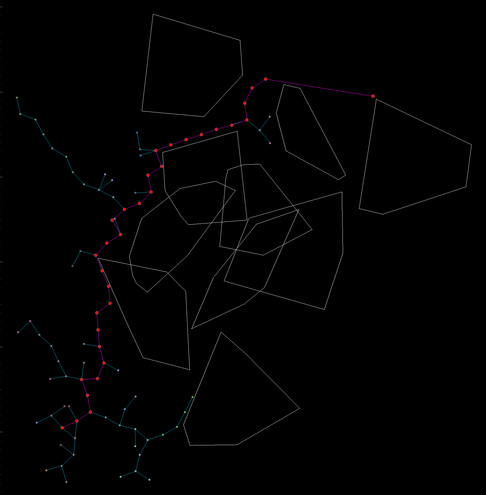
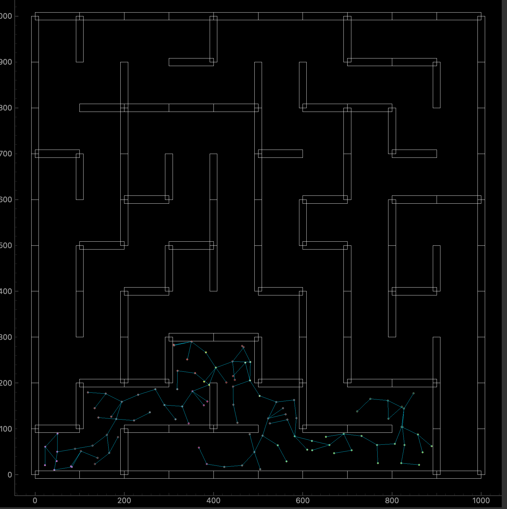
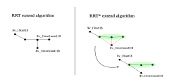

Path Planning
RRT represents a class of methods (Rapidly exploring Random Trees) to finding an optimal path within a given free space from one point to another. It is often used in planning robotic motion constrained motion problems due to its flexibility.
I started the project as an application to a club, but worked on it after as a passion project, and it provided a nice introduction to researching and implementing algorithms.
The core idea is to sample the free space and attempt to grow the tree from the root (starting point) to the sampled point by a chosen step size. Over many iterations, the tree will flood the free space and a solution will be found.

The algorithm makes heavy use of finding the nearest neighbor to the sampled point, and so spatial indexing is often used as a speed up. There are many trees that can be used for indexing, but I chose to implement RTrees due to its flexibility, mainly, its ability to handle objects outside of just points. This becomes handy when dealing with meshes for fast obstacle collision detection.

The simple implementation is not very effective however, as the path is not optimal in terms of length. It is also not effective in maneuvering small spaces:


As it fails to find the optimal path in a maze. One of these problems can be tackled with rrt*, a variant which adjusts the wiring of the new node to the tree. Rather than selecting the closest neighbor to the sampled node, we select the tree node in a neighborhood of the nearest neighbor. The cost function will determing the parent node, and the metric used is the distance from the sampled node to the root of the tree,

Overall, it was a very fun and rewarding project to work on:
There are many other variants, and here is a list and some details of the ones I implemented:
I also built a GUI for visualization of the solution path, obstacles, and underlying data structures, which can be found on Github.